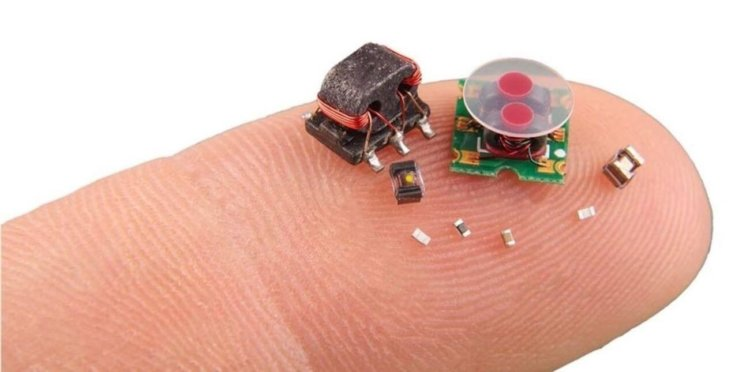

Новости о робототехнике
-
SHRIMP: крошечные роботы-спасатели от DARPA
Миниатюрная робототехника все больше интересует крупные агентства мира. К примеру, недавно управление перспективных исследовательских проектов Министерства обороны США (DARPA) приступило к разработке миниатюрных роботов, которые помогут ликвидировать последствия природных катаклизмов и не только.
Проект получил название SHRIMP (SHort-Range Independent Microrobotic Platforms) и разрабатываемые в его рамках роботы будут относиться к самому маленькому типу подобных механизмов. Как сообщает издание Engadget, их размер будет не больше насекомых. При этом они являются достаточно быстрыми, маневренными, смогут прыгать, летать, поднимать предметы и проводить анализ местности.